앵글로색슨족
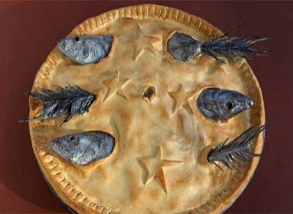
앵글로색슨족의 대표주자 잉글랜드
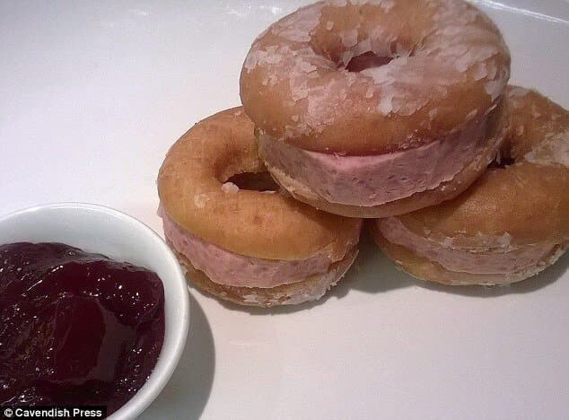
도넛에 생스팸 넣고 먹기
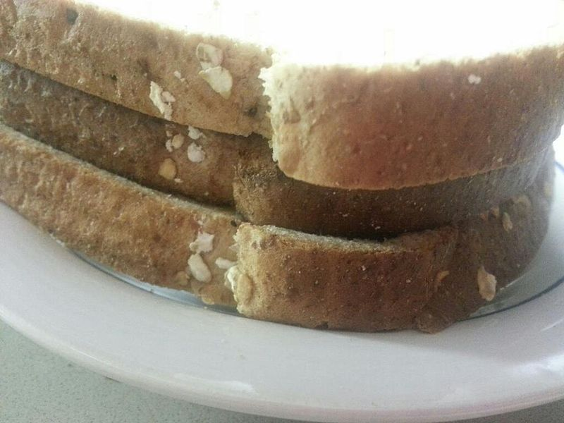
토스트토스트샌드위치
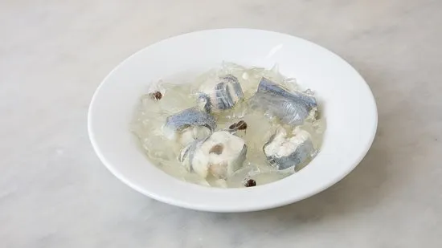
장어 젤리는 너무 유명하고
캐나다에서 나온 하와이안 피자
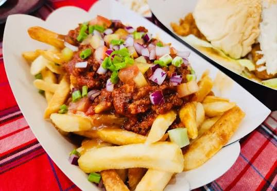
그나마 먹을만 하다는 음식은 감자튀김 모둠 푸틴
췌장을 파괴하는 각종 음식들을 먹는 앵글로 향우회의 맏이 미국
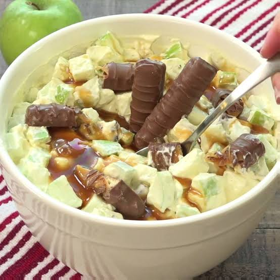
트윅스 샐러드
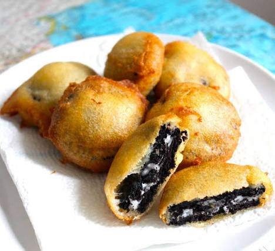
오레오 튀김
도넛 아이스크림 튀김
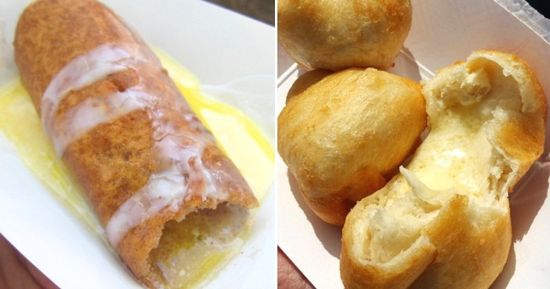
버터 튀김
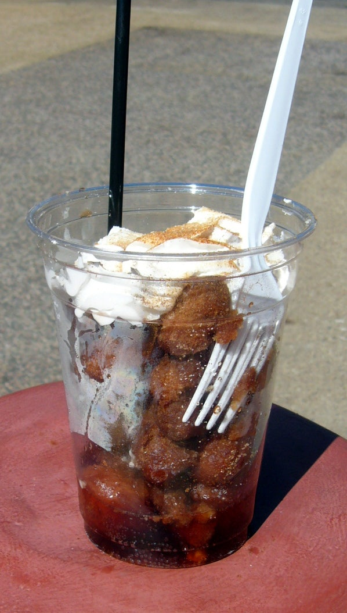
콜라 튀김
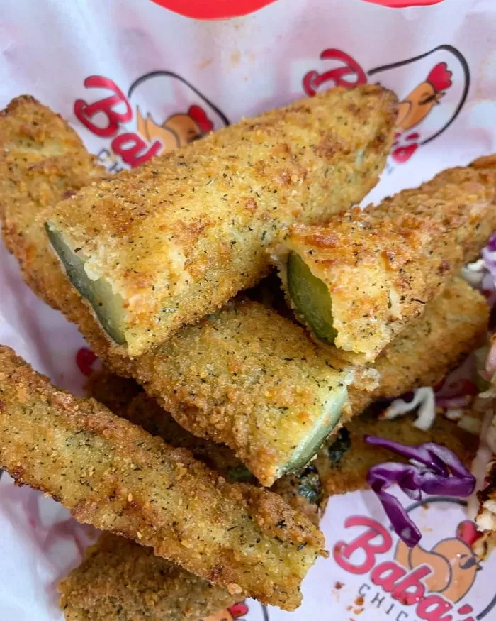
피클 튀김등 각종 이상한 튀김 만들기의 장인 국가
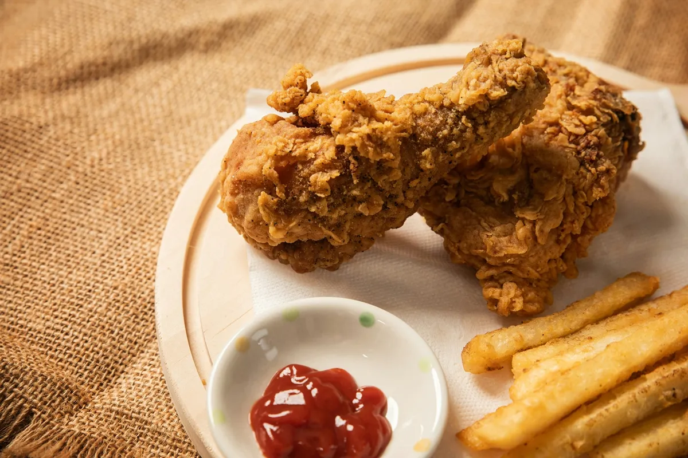
참고로 프라이드 치킨은 앵글로색슨족 따위가 아닌 흑인들의 소울푸드다
오레오튀김은 존맛일거같은데